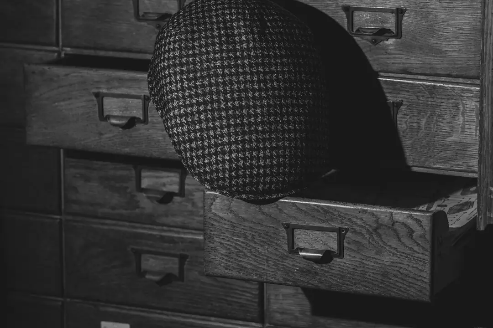
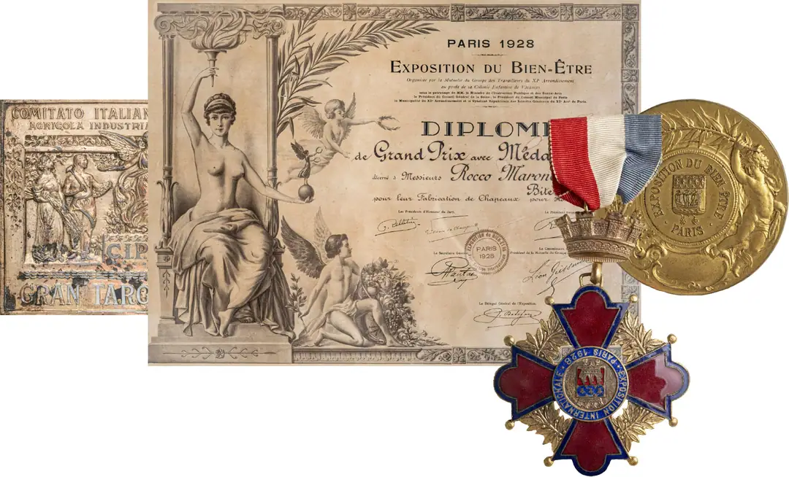
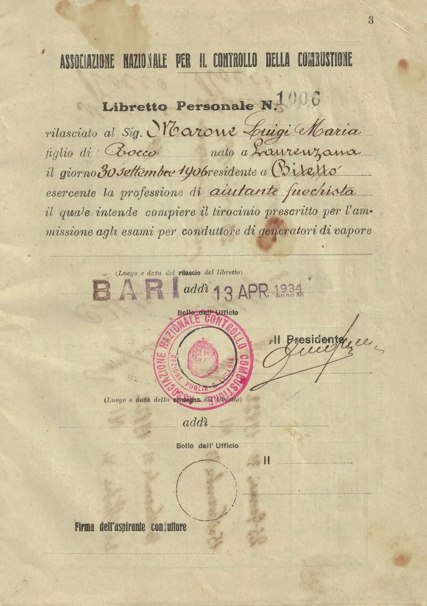
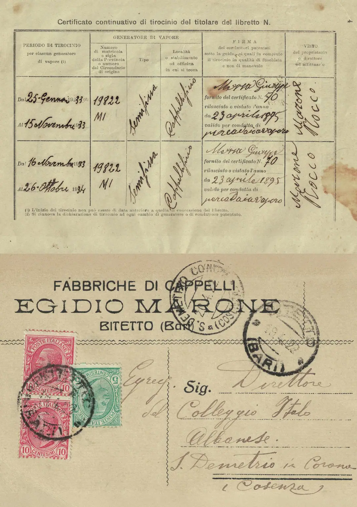
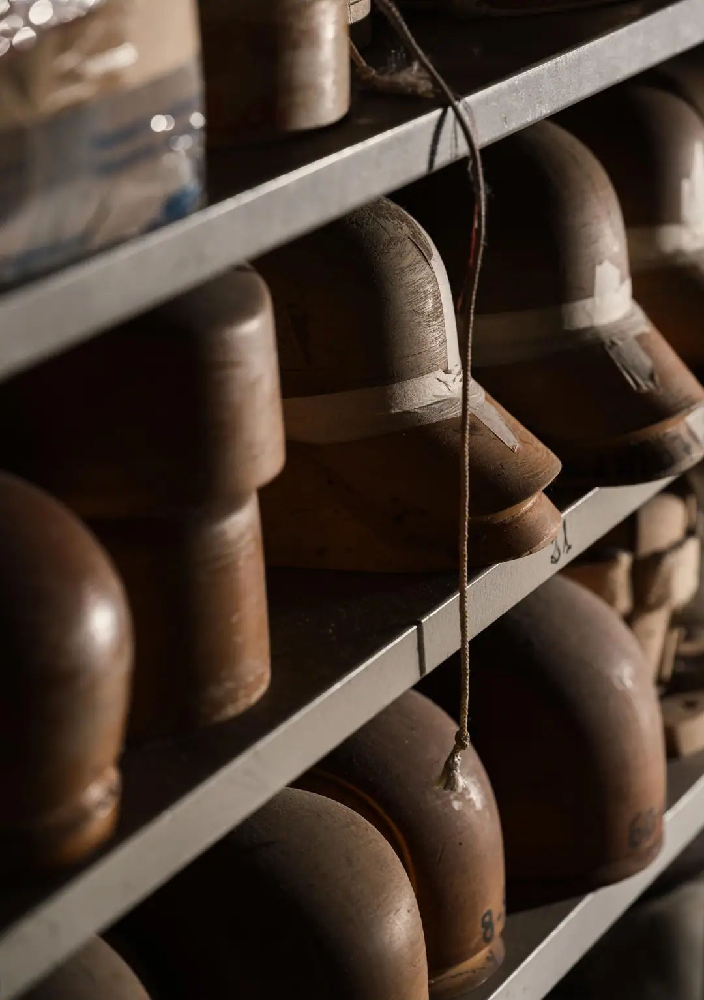
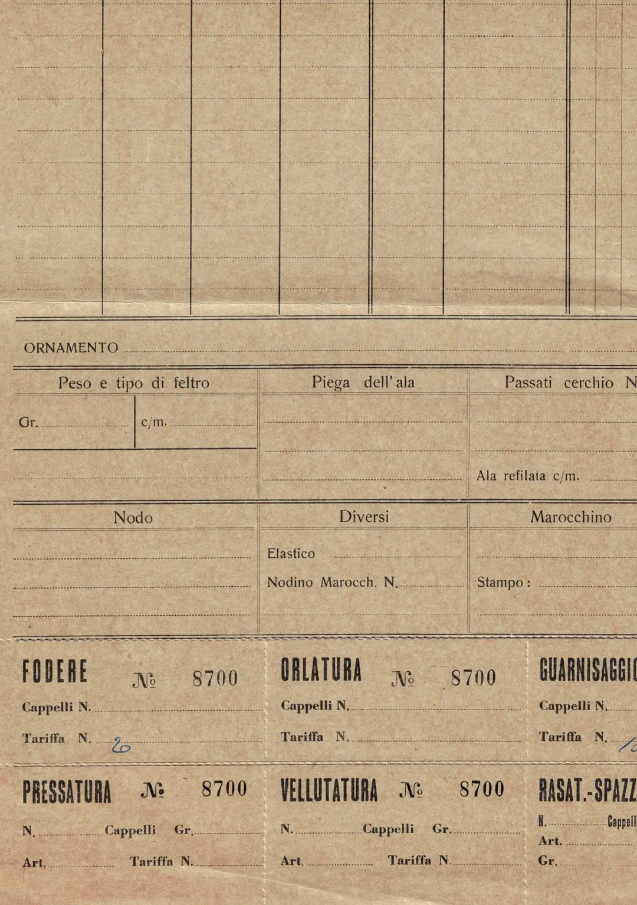
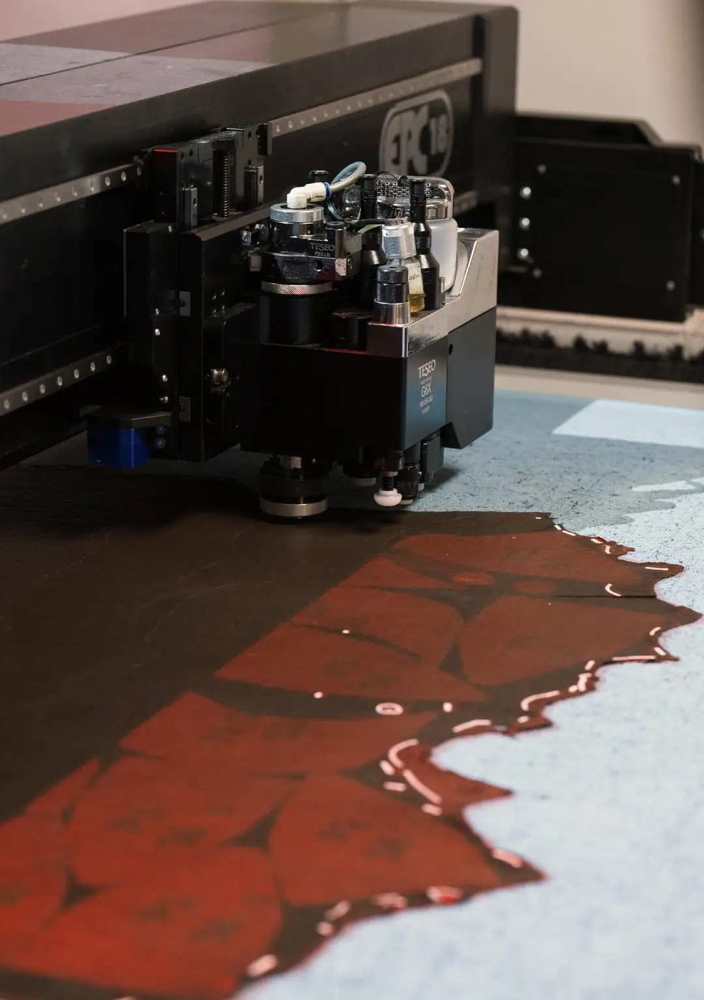
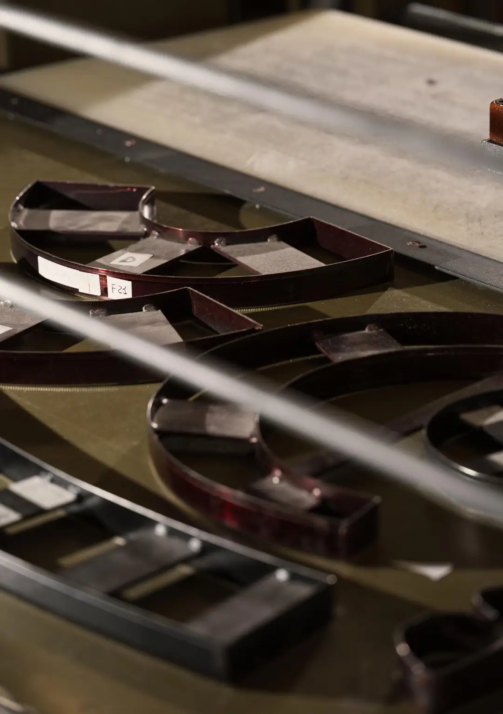
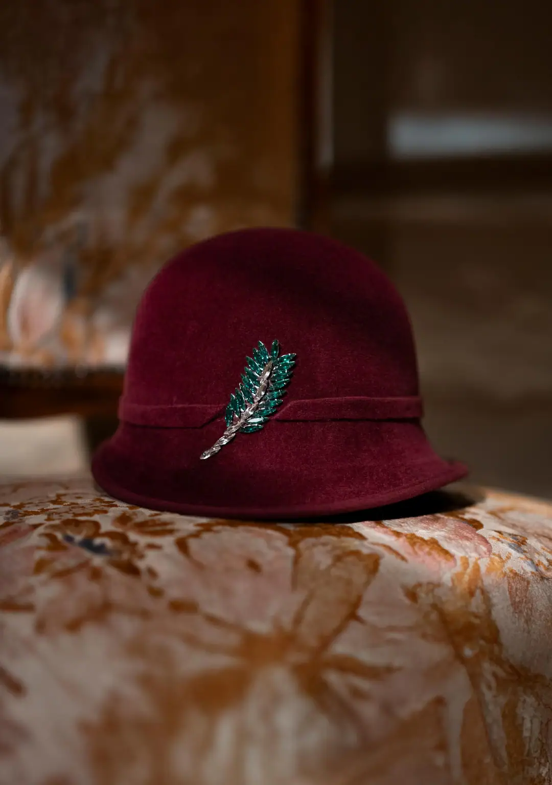
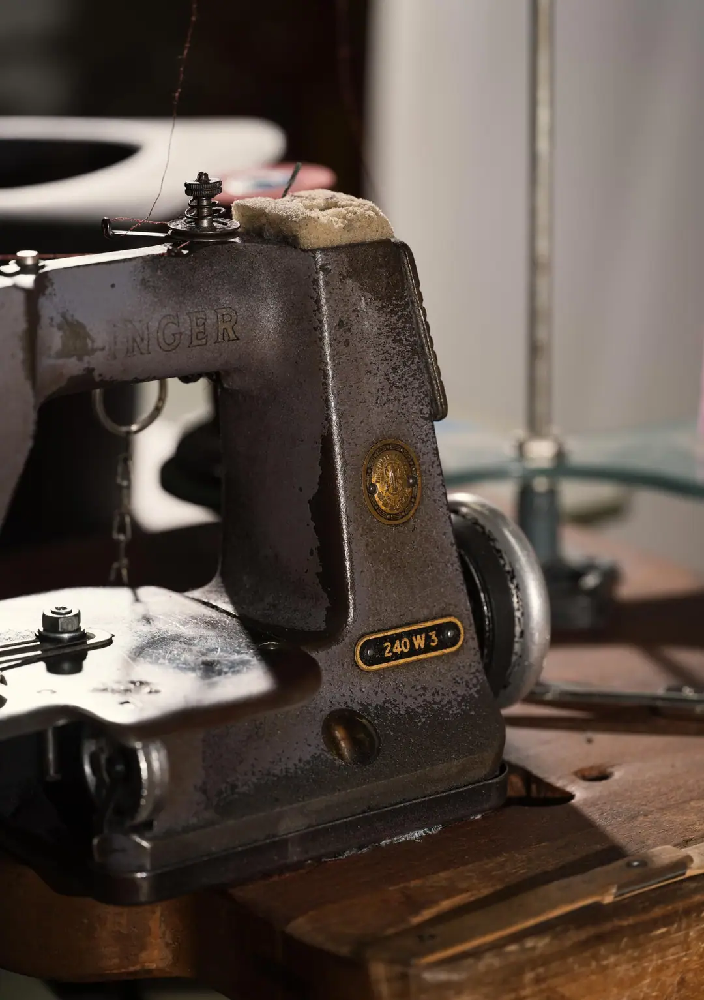

DÉCOUVREZ LE MONDE MARONE

1881 • 2026
HISTOIRE FUTURE
Maîtres chapeliers Marone
Nous avons des registres et des tampons, des carnets et des photos passées, des prix internationaux et des outils qui ont traversé des générations d'artisans très habiles. Mais ce que nous gardons avec le plus de fierté, ce sont de petits gestes répétés. Ceux, vifs, de nos pères que nous admirions comme des magiciens de la vapeur.
De Laurenzana à Bitetto, des sites de Foggia aux marchés étrangers. De Giuseppe à Rocco, de Raffaele aux petits-enfants, avec une vision infatigable et la recherche du savoir-faire. La famille Marone marque l'histoire de la chapellerie italienne dans le monde en travaillant le feutre le plus doux, la paille la plus fine et les tissus les plus précieux sur des archives de modélisme infinies.
Ce XIXe siècle en noir et blanc semble très lointain ; il est pourtant le devenir entre nos mains. Inchangé et révolutionné à chaque heure dans les bureaux de création, dans l'atelier de production et sur les étagères d'exposition. Aujourd'hui naissent les nouvelles silhouettes à composer et les trames inattendues des objectifs à venir.








